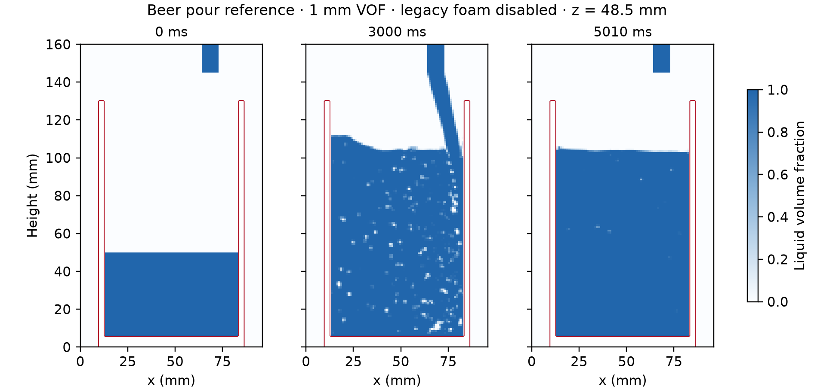
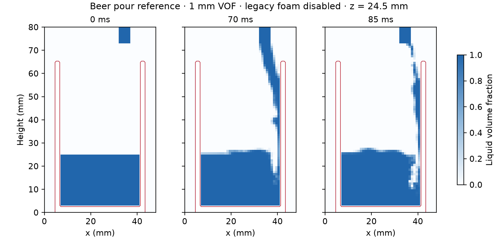
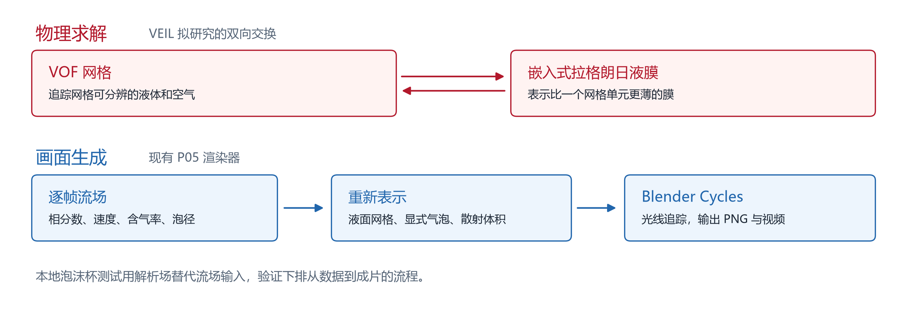

VOF with Lagrangian Thin Films
倒啤酒时，射流和液面可以用网格计算，泡沫里把气泡隔开的液膜却只有微米厚。现有求解器用两个网格场追踪网格看不清的气泡，已经能计算含气液体的输运、上浮和排液。VEIL 提案进一步研究怎样把单张薄膜作为拉格朗日元素嵌入网格。During a beer pour, a grid can resolve the jet and the free surface, while the liquid films separating bubbles in the foam can be only micrometres thick. The existing solver tracks unresolved bubbles with two grid fields and models transport, rise, and drainage in aerated liquid. VEIL explores how individual films can be embedded in the grid as Lagrangian elements.


水、气与泡沫的守恒转换Conservative exchange among liquid, resolved gas, and dispersed bubbles
在粗网格上，纯液体记为 L，分散泡气体记为 B，由 VOF 解析的气体记为 G。在 Cirrus 变量中，α 是液体与分散泡合占的体积分数，φ 是分散泡占整格的体积分数。On the coarse grid, L denotes pure liquid, B denotes gas in dispersed bubbles, and G denotes VOF-resolved gas. In Cirrus, α is the volume fraction occupied by liquid and dispersed bubbles together. φ is the fraction of the entire cell occupied by dispersed bubbles.
eC 和 rC 是一步内转入和转出分散泡的气体体积，VC 是单元体积。受控开孔验收中，从微观界面识别与外部气体连通的原泡，再将同一笔气量从 B 转入 G。转换保持纯液体和总气量守恒。单泡膜何时自行开孔，以及原泡气体穿过孔口的输运量，仍需从微观求解和守恒示踪得到。eC and rC are the gas volumes transferred into and out of the dispersed-bubble phase during one step. VC is the cell volume. In the prescribed-opening test, the microscopic interface identifies the original bubble when it connects to the surrounding gas, and the same gas volume is transferred from B to G. The exchange conserves pure liquid and total gas. Predicting spontaneous opening and measuring the original bubble gas transported through the hole require a microscopic solve and conservative tracing.
原尺寸纯 VOF 对照已完成。 沿用 96 × 160 × 96 的 1 mm 网格，关闭原有泡沫模块，从 0 秒算到 5.01 秒，共 29,435 步、102 帧。3.00 秒关阀后累计新增进液为零，全程液量账最大相对误差为 5.05 × 10⁻¹⁴。The full-scale pure-VOF baseline is complete. With the existing foam module disabled, the run uses the same 96 × 160 × 96 grid at 1 mm spacing, advancing from 0 to 5.01 s in 29,435 steps with 102 frames. Cumulative liquid inflow stays constant after shutoff at 3.00 s. The liquid-volume ledger has a maximum relative error of 5.05 × 10⁻¹⁴.

末态动能约为关阀时的 0.83%，液面高度的均方根波动约 2.08 mm，尚未达到回稳判据。这是关闭旧泡沫模型的整杯基线。DNS 双向转换闭合仍待整杯验证。Final kinetic energy is about 0.83% of its value at shutoff, and the root-mean-square free-surface height fluctuation is about 2.08 mm. The run has yet to meet the settling criterion. This full-cup baseline has the existing foam model disabled. The DNS-based two-way exchange closure still awaits full-cup validation.



读完整守恒推导 · 查阅受控开孔的公式和数值结果Full conservation derivation · Equations and numerical results for the prescribed-opening test (Chinese)
物理方法Physical model
VOF 从相分数重建液面。 Cirrus-VOF 在每个混合单元里用一张平面近似气液界面（PLIC），按穿过网格面的几何体积更新相分数 α。速度存在网格面上（MAC 布局），求解器用变密度压力投影约束不可压缩流动，用高度函数估计曲率并施加表面张力。基础求解器支持自适应八叉树，下面的倒啤酒泡沫模型运行在等间距的最细网格上。VOF reconstructs the surface from phase fractions. Cirrus-VOF represents the gas–liquid interface in each mixed cell by a plane (PLIC) and updates the phase fraction α from geometric volumes moving through the cell faces. Velocities are stored on faces in a MAC layout. A variable-density pressure projection enforces incompressibility. Height functions estimate curvature for the surface-tension force. The underlying solver supports adaptive octrees. The beer-pour foam calculation below uses the finest uniform grid spacing.
现有泡沫求解器怎样表示小气泡How the existing foam solver represents small bubbles
v2.3 在 VOF 的液体一侧再存两个量。φ 是分散气体占整格的体积分数，n 是每立方米的气泡数。这样纯液体占 α − φ，由 VOF 显式分辨的自由气体占 1 − α。等效泡径由这两个量算出。Version 2.3 stores two quantities on the liquid side of the VOF interface. φ is the fraction of the entire cell occupied by dispersed gas and n is the number of bubbles per cubic metre. Pure liquid therefore occupies α − φ, and the free gas resolved by VOF occupies 1 − α. The equivalent bubble diameter is obtained from φ and n.
卷气Air entrainment
检测网格上与大气隔离的小气团，把符合条件的气团体积和泡数记进 φ 与 n。达到阈值的大气团继续由 VOF 分辨。The solver identifies small gas pockets disconnected from the atmosphere on the grid and transfers the gas volume and bubble count of qualifying pockets into φ and n. Larger gas pockets remain resolved by VOF.
输运与上浮Transport and buoyant rise
两个场与液相共用 PLIC 面通量，分方向推进时冻结用于体积修正的浓度，使修正项在不可压缩流中抵消。低于 F4 的拥挤阈值 c = 0.64 时，小泡相对液体上浮，拥挤会减慢上浮。The two fields share the liquid PLIC face fluxes. In directionally split transport, the concentration used for the volume correction is held fixed so the correction cancels for incompressible flow. Below the F4 crowding threshold c = 0.64, small bubbles rise relative to the liquid. Crowding slows that rise.
湿泡沫排液Wet-foam drainage
达到拥挤阈值后，液体按 Darcy 模型下排，渗透率取 k = 8 × 10⁻⁴d²(1 − c)²。气体按等体积向上换位，含气比上限为 0.95。独立账本检查气量与泡数收支。Above the crowding threshold, liquid drains down under a Darcy model with permeability k = 8 × 10⁻⁴d²(1 − c)². Gas moves upward by the same volume, and the gas fraction is capped at 0.95. Separate ledgers track gas volume and bubble count.
F4 v2.3 让分散气体降低混合物受重力的有效密度。v2.3.1 加了两个默认关闭的开关，可让压力投影等环节也使用混合密度，并在浓泡沫形成贴壁液膜时计算滑动摩擦。现有模型还省略了自由表面的泡沫破裂释气。In F4 v2.3, dispersed gas lowers the effective density used for gravity. Version 2.3.1 adds two options, both off by default, for using mixture density in operations including the pressure projection and applying wall-slip friction where dense foam forms a wall film. The existing model omits gas release from foam rupture at the free surface.
VEIL 拟加入显式薄膜的位置Where VEIL proposes to add explicit films
当液膜远薄于网格间距，两侧气液界面可能落在同一格里。VEIL 拟用随流动移动的拉格朗日元素记录膜，并研究网格与膜如何分配体积、质量和表面张力。提案计划用 GOLD 的小区域高分辨率两相流作参照。When a film is much thinner than the grid spacing, both gas–liquid interfaces can lie in a single cell. VEIL proposes advected Lagrangian elements for the film and studies how the grid and film share volume, mass, and surface tension. The proposal plans to use GOLD's high-resolution two-phase simulations in small subdomains as a reference.

原始资料 泡泡模拟中文提案（2026-11-18）、Cirrus-VOF v1.0、v2.3 泡沫模型与 v2.3.1 的贴壁摩擦说明Sources · Chinese bubble simulation proposal (18 November 2026), Cirrus-VOF v1.0, the v2.3 foam model, and the v2.3.1 wall-friction notes.
泡沫怎么画How the foam is rendered
原尺寸 F4 的制作过程。 Cirrus-VOF v2.3.1 在 96 × 160 × 96 的 1 mm 网格上推进到 3.00 秒并关闭进液，继续算到 5.01 秒，共 26,096 步。关阀帧的相分数、速度、压力和泡沫场与原三秒算例逐字节一致。P05 根据各帧场量重建液面、泡沫散射场和可见气泡，用 Blender Cycles 渲染，并在共同的关阀帧衔接两段。显式薄膜的破裂和释气仍待验证。Full-scale F4 rendering pipeline. Cirrus-VOF v2.3.1 advances on a 96 × 160 × 96 grid with 1 mm spacing. The inlet closes at 3.00 s and the simulation continues to 5.01 s, for 26,096 steps in total. The phase fraction, velocity, pressure, and foam fields at shutoff are byte-identical to the original three-second run. P05 reconstructs the liquid surface, the foam scattering field, and visible bubbles from the saved fields. Blender Cycles renders the frames, and the two segments meet at the shared shutoff frame. Explicit film rupture and gas release still await validation.
液面和杯子Liquid surface and glass
从 α 场提取三角网格。杯子的内外半径、杯底和杯口来自算例配置，速度场用于更新气泡位置和运动模糊。The liquid surface is triangulated from the α field. The inner and outer radii, base, and rim come from the case configuration. The velocity field updates bubble positions and drives motion blur.
细泡沫的白色White scattering in dense foam
密集泡沫写成 OpenVDB 散射场。F4 视频使用中性白体积散射，散射方向的平均余弦取 0.70。关闭这项近似的同帧对照。Dense foam is rendered as an OpenVDB scattering volume. The F4 video uses neutral white volume scattering with a mean scattering-angle cosine of 0.70. Compare the same frame with volume scattering off.
可见的单个泡Visible individual bubbles
较稀的含气液体用折射小球。贴杯壁的第一层用经邻居平面和杯壁裁切的气泡网格，再调整体积补回裁切损失。Sparser aerated liquid is rendered with refractive spheres. The first wall-adjacent layer uses bubble meshes clipped by neighbouring bubble planes and the glass wall. Their volumes are then adjusted to make up for clipping losses.
φ 是分散气体占整格的体积分数，D 是渲染网格上的代表泡径。泡越小，相同气量能分成越多颗泡，总迎光截面积随之增大，所以泡沫更容易发白。系数 1.5 来自该版对极窄前向衍射峰的近似处理。显式气泡和散射体积按每格气量分配，贴壁层放不下的余量交还给后方体积。射流可以将气泡随液体带向下方，气泡同时相对液体向上漂移，两者的叠加决定实际轨迹。φ is the whole-cell dispersed-gas fraction, and D is the representative bubble diameter on the rendering grid. For a fixed gas volume, smaller bubbles give a larger total cross-section for light, making the foam appear whiter. The factor 1.5 comes from this version's approximation to the narrow forward diffraction peak. Per-cell gas volume is allocated between explicit bubbles and the scattering volume. Any remainder that cannot fit into the wall layer is returned to the volume behind it. The jet can carry bubbles downward with the liquid while they drift upward relative to it. Both contributions determine the actual trajectories.
原始资料 P05 v2.3 渲染技术说明Source · P05 v2.3 rendering notes.
初步结果Preliminary results
| 证据来源Evidence | 初步结果Preliminary result | 怎么理解Interpretation |
|---|---|---|
| 团队 · Cirrus-VOFTeam · Cirrus-VOF | 三档 AMR 对照 1,464 / 1,464 通过。完整 N64 轨迹为 214 / 488 通过。Three AMR resolutions pass 1,464 / 1,464 checks. The complete N64 trajectory passes 214 / 488. | 与 Aphros 的逐帧、逐字段结果。三档 AMR 通过指定的 10⁻⁶ 相对误差门槛，N64 完整三秒验收仍未通过。Frame-by-frame and field-by-field checks against Aphros. The three AMR resolutions meet the specified 10⁻⁶ relative error threshold. The complete three-second N64 trajectory has yet to pass acceptance. |
| 团队 · F3/F4Team · F3/F4 | F4 第 78 帧贴壁层为 1.76 / 1.89 mL（约 93%）。F3 记录到 1.0 秒、31 帧，随后标记失败。At F4 frame 78, the wall layer contains 1.76 / 1.89 mL (about 93%). F3 records 31 frames through 1.0 s before being marked as failed. | F4 的 93% 是显式网格承载的壁层气量比例，剩余气量用于体积散射。F3 的泡沫场是被动输运，缺少泡的上浮机制。For F4, 93% is the fraction of the wall-layer gas represented by explicit meshes. The remainder is used for volume scattering. F3 transports its foam field passively with no bubble-rise mechanism. |
| 本机 · Cirrus 泡沫回归Local · Cirrus foam regressions | v2.3.1 GPU 构建的 --foam 8 项通过。稀泡上浮速度 0.0430 m/s，模型参考值 0.04255 m/s。湿泡沫排液速度约 0.685 mm/s。The v2.3.1 GPU build passes all eight --foam tests. The dilute bubble rise speed is 0.0430 m/s, compared with the model reference of 0.04255 m/s. Wet-foam drainage speed is about 0.685 mm/s. | 验证了代码实现与本模型参考值的一致性。小气团转化和重启也通过了气量平衡与逐位一致性检查。The tests check the implementation against its model references. Small-gas-pocket conversion and restart also pass gas-volume balance and bitwise consistency checks. |
| 本机 · A1 重算Local · A1 rerun | 74 项通过，0 失败。2,000 粒子下，ℓ = 2 和 ℓ = 3 模态的频率误差为 0.624% / 0.201%。74 checks passed and none failed. With 2,000 particles, the frequency errors for the ℓ = 2 and ℓ = 3 modes are 0.624% and 0.201%. | 对照真空泡的解析振荡频率。Backward Euler 与 BDF2 轨迹均由原 C++ 代码计算，再由原脚本生成 11 秒视频。The reference is the analytic oscillation frequency of a vacuum bubble. The original C++ code computes the backward Euler and BDF2 trajectories. The original script produces the 11-second video. |
| 本机 · 缩尺 F4Local · Reduced-scale F4 | Cirrus-VOF 求解至 0.10 秒，653 步，末态分散气体 0.184 mL。Cirrus-VOF advances to 0.10 s in 653 steps. The final dispersed gas volume is 0.184 mL. | 杯体约为原算例一半，网格间距保持 1 mm。用六帧真实求解输出渲染，视频放慢播放。原尺寸的完整倒入和沉降需要更长的模拟时间。The cup is approximately half the size of the original at the same 1 mm grid spacing. Six simulation frames are rendered and played back slowly. A full-scale pour and subsequent settling require a longer physical simulation. |
| 本机 · 原尺寸 F4Local · Full-scale F4 | 求解 5.01 秒，26,096 步，分散气体从关阀时的 58.61 mL 变为末态的 59.57 mL。The run advances to 5.01 s in 26,096 steps. Dispersed gas volume changes from 58.61 mL at shutoff to 59.57 mL at the end. | 3.00 秒关阀，新增进液为零，末态动能约为关阀时的 2.0%。旧泡沫模型未包含单泡破裂释气。The inlet closes at 3.00 s and no additional liquid enters. Final kinetic energy is about 2.0% of its value at shutoff. The existing foam model omits gas release from individual bubble rupture. |
核对资料 Cirrus-VOF 进展报告（2026-11-17）、P05 v2.3 的 F4 贴壁记录、本机 A1 频率日志与渲染日志Verification sources · Cirrus-VOF progress report (17 November 2026), P05 v2.3 F4 wall-layer records, and local A1 frequency and rendering logs.
静水中的气泡上浮Bubble rise in quiescent liquid
用 Cirrus-VOF v1.0 的原始静水气泡算例，从初始气泡求解到 3.00 秒。网格为 32 × 64 × 32，重力沿负 y 方向，气泡密度为周围液体的 1/10。由七帧三维相分数字段重算的气泡质心逐帧上升，y 从 0.5000 升到 1.4476，与 C++ 诊断一致。整个算例的最大相对气泡体积漂移为 1.04 × 10⁻¹¹。The original Cirrus-VOF v1.0 quiescent-liquid case is rerun from the initial bubble to 3.00 s. The grid is 32 × 64 × 32, gravity acts along negative y, and the bubble density is one tenth of the liquid density. The bubble centroid rises in all seven saved three-dimensional phase fields. Its y coordinate increases from 0.5000 to 1.4476, consistent with the C++ diagnostics. The maximum relative bubble-volume drift is 1.04 × 10⁻¹¹.
静水基准核查了浮力方向。倒啤酒时，射流携带气泡向下和气泡相对液体向上漂移可以同时发生，需从完整倒入与停流后的流场判断泡沫何时到达液面。The quiescent-liquid benchmark checks the direction of buoyant rise. During the beer pour, bubbles can be carried downward by the jet while rising relative to the liquid. The flow during the pour and after shutoff determines when foam arrives at the surface.
复现范围与缺口Reproduction scope and gaps
本机完成了仓库所附 beer_glass_pour96_foam_buoyant 的三秒倒入求解及关阀后的 2.01 秒续算。合并成片使用 Cirrus-VOF e49ad3a 和 P05 渲染器 46be115。团队原始发布帧对应的运行目录和续算检查点尚未取得，同帧对照仍待验证。The local run reproduced the repository's beer_glass_pour96_foam_buoyant case with a three-second pour and 2.01 s of continuation after shutoff. The combined video uses Cirrus-VOF e49ad3a and P05 renderer 46be115. The run directory and restart checkpoint behind the team's original published frames have yet to be obtained, so the same-frame comparison remains open.